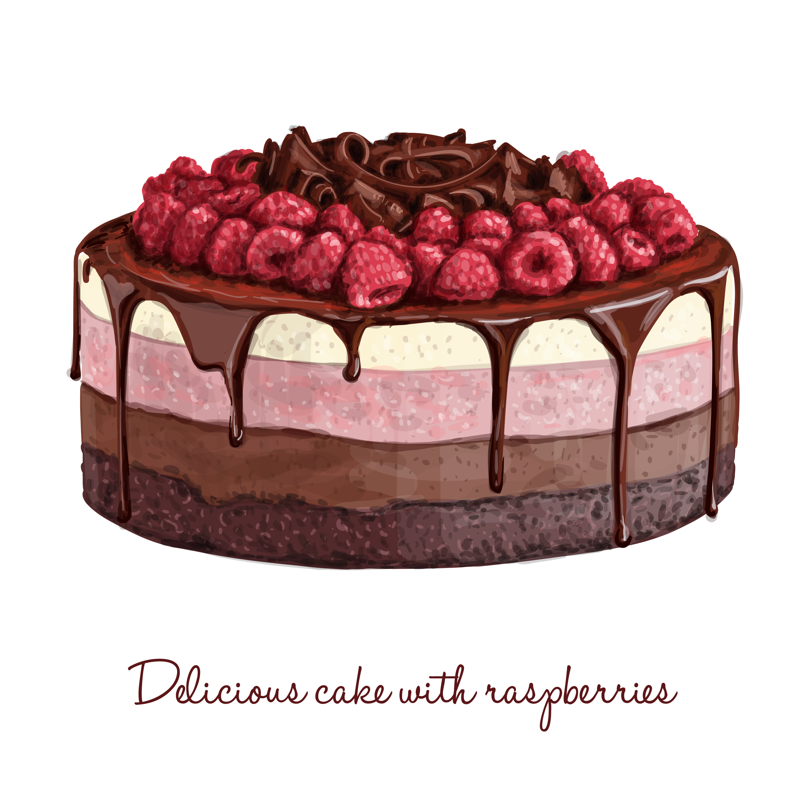

Cake

Here is how to make a yummy cake!
Ingredians needed
- All purpose flour
- Eggs
- Butter
- Milk
- Sugar
- Baking powder
- Coco powder
Steps
- Take a bowl and put all purpose flour in it.
- Add Eggs, Milk, Sugar, Baking powder and Coco powder to it.
- Mix it well.
- Then add some butter and again mix it well.
- Apply butter on a tray.
- Pour out the mixture to it.
- Keep it in the oven for 25 minutes.
- Enjoy the cake.